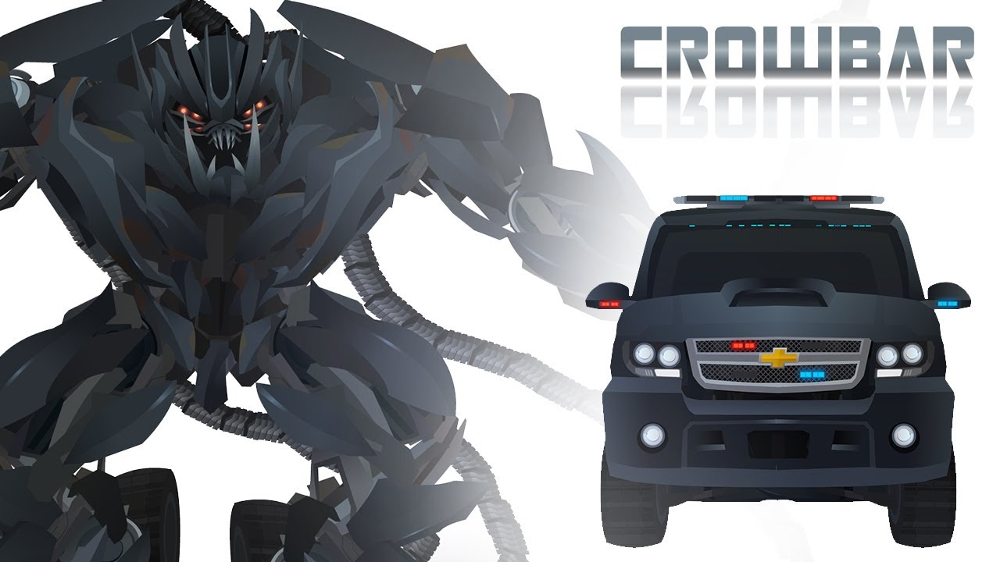
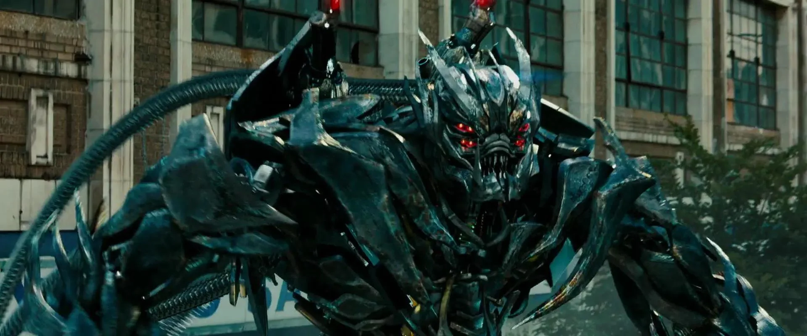

Crowbar được biết đến như một bậc thầy đột phá và đột nhập. Không thành vấn đề nếu chúng ta đang nói về hệ thống máy tính, két sắt của con người hoặc các hợp chất của kẻ thù. Crowbar có những kỹ năng cần thiết về tàng hình và trí thông minh để xâm nhập và quan sát các chuyển động chiến thuật của Autobot. Anh ta cũng đã được huấn luyện về các chiến lược tấn công tàn bạo nhất của Decepticon để phòng trường hợp anh ta bị phát hiện. Sau khi Sentinel Prime được lấy từ Mặt trăng của Trái đất và được kích hoạt lại, Megatron đã bắt đầu thực hiện kế hoạch đã được chờ đợi trong hàng trăm năm. Với việc con người Sam Witwicky tin rằng Decepticons muốn bắt Sentinel và buộc anh ta sử dụng cột điều khiển để kích hoạt cây cầu không gian của mình, Dreads đã được cử đi truy đuổi Autobots. Áp sát xe của Seymour Simmons , Crowbar biến hình và ném cựu đặc vụ Sector Seven ra phía sau khi anh ta lao về phía trước để húc đổ biển báo đường cao tốc dành cho Crankcase và Hatchet sử dụng làm đường dốc.

Tuy nhiên, bất chấp những nỗ lực tập thể tốt nhất của họ để làm chậm Autobots, Hatchet nhanh chóng bị tiêu diệt và những Dreads còn lại sớm phải đối mặt với kẻ tấn công hạng nặng Autobot, Ironhide, kẻ đã ngăn chặn chúng trên đường đi bằng một vụ va chạm trực diện. Đối mặt với vũ khí hạng nặng của Ironhide và Sideswipe , Dreads dường như đã đầu hàng bằng cách đánh rơi vũ khí tầm xa của mình, nhưng ngay khi các Autobot làm theo, chúng đã triển khai những ngọn giáo có gai để tấn công kẻ thù của mình. Mặc dù ngọn giáo của Crowbar đã tìm thấy dấu vết của nó, găm vào vai của Ironhide, Sideswipe đã ném cho Autobot kỳ cựu khẩu Blaster đã bỏ đi của mình, thứ mà anh ta đã dùng để bắn vào mặt Crowbar khi Decepticon lao tới tấn công, giết chết Crowbar.

Sau đó, Crowbar đã đến để giúp Soundwave khi Soundwave đang cố gắng thoát khỏi căn cứ của NEST. Xà beng là để gây ra sự phân tâm, điều mà anh ấy thích thú có nghĩa là anh ấy phải đánh bại con Bumblebee "twerp nhỏ sáng bóng" đó . Sau khi họ trốn thoát, anh ta rút lui về căn cứ của Decepticons ở Siberia . Anh ấy không nghĩ rằng các Autobot sẽ tìm thấy họ ở đó, nhưng đã nói với một trong những người lính của anh ấy rằng đừng làm phiền Megatron nếu họ làm vậy. Khi các Autobot chắc chắn xuất hiện, Crowbar đã tiêu diệt cả đống chúng, nhưng dường như là không đủ, vì cuối cùng chúng đã giành được quyền tiếp cận căn cứ.